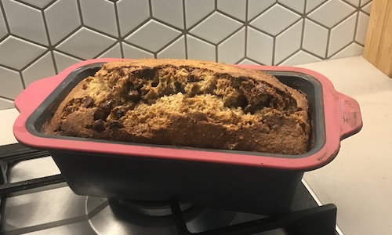

Banana bread was a big staple in my house when I was a kid. My mum made it often when we had black bananas…I wanted to come up with a healthier version. This one still has its fair share of sugar, but also incorporates some nutritious ingredients with good fats - almond meal, eggs and coconut oil. My kids won’t eat anything if it tastes too healthy - and this tastes just like normal banana bread so it’s great for those fussy kids in the family! My kids honestly tell me this is the yummiest banana bread that they’ve ever tasted. I’ve also been known to add in some dark chocolate chips or cacao nibs for some extra yumminess.
Sometimes we are looking for a healthier snack, but that doesn’t necessarily mean it has to be the absolutely healthiest thing that they’ve ever eaten. It can be something that fits the category of ‘healthier than they would normally eat’. So be aware, this food is calorie dense, but for a growing toddler, a picky eater or a teenager who you can never fill up it’s a great option that will keep them coming back for more.
Nutrient Profile
This recipe is a great source of Magnesium, Manganese, Copper, Calcium and a variety of other trace minerals. You’ll also find Vitamins A, C, D, E and K, as well as a wide variety of B vitamins, a healthy dose of good fats and plenty of fibre.
Makes: 12 Servings at 367kcal or 1538kJ per slice
Ingredients
- 3 medium ripe bananas
- 1/2 tsp pure vanilla extract
- 3 whole free-range organic eggs
- 1/2 cup packed organic brown sugar
- 3 Tbsp maple syrup (or you can sub with honey)
- 3 and a 1/2 tsp baking powder
- 3 Tbsp organic coconut oil, melted
- 3/4 tsp sea salt
- 1/2 tsp ground cinnamon
- 1/4 cup whole milk (or an alternative dairy-free milk such as soy or oat milk)
- 2 cups almond meal
- 1 and 3/4 cup gluten-free flour blend
- Optional extra - dark choc chips or cacao nibs
Preparation:
- Prep time: 15 minutes
- Total time including baking: 1 and 1/2 hours
Line a bread tin with baking paper or grease a silicone bread mold. Preheat the oven to 175 C. Mash bananas and then add all the ingredients through to the milk. Combine all the ingredients thoroughly. Add Almond meal and gluten free flour and then mix until combined. Then add the chocolate chips/cacao nibs and stir them through. Add the mix to the bread tin and bake for 1 hour to 1hr 15, until golden brown and cracking on the surface. Insert a knife to ensure it comes out clean, if not return to the oven until fully cooked.
#fillingbreakfast #healthytreats #kidstreats #glutenfree #taketowork
